|
Ledbot kvadro - так называется робот, на котором установлены необычные датчики света. В качестве фотосенсоров установлено четыре (kvadro) светодиода (led). В конструкции робота светодиоды работают в гальваническом режиме генератора тока. Они воспринимают яркий свет и преобразуют его в электрическое напряжение. С помощью направленного луча света, например от фонарика, можно управлять роботом, вызывать повороты в разные стороны или движение по прямой. Робот весьма энергичен, и чтобы им управлять потребуются все ваши таланты. Чем дольше луч света попадает на светодиоды, тем быстрее едет робот. С этим роботом можно проводить игры, например кто успешнее проведёт его лучом света по прямой линии, всё зависит от вашей фантазии. |
***
На фото.1 показан робот в сборке. В передней части робота размещены четыре светодиода, которые являются датчиками света. На транзисторах выполнен усилитель напряжения для генерируемого сигнала от светодиодов и тока для управления моторами. Источник питания закреплён на печатной плате со стороны радиокомпонентов.
фото.1.
1.ВИДЕОТЕСТЫ РОБОТА
На видео.1 движение робота за лучом света от фонарика. На видеофрагменте освещение светодиодов расположенных слева на корпусе робота вызывает поворот влево, а освещение расположенных справа, вызывает поворот вправо. Прямое освещение всех светодиодов вызывает движение вперёд
Видео.1: http://www.youtube.com/watch?v=nWdYKRZ9m8M
2.ХАРАКТЕРИСТИКИ И ФУНКЦИОНАЛЬНОСТЬ
Для обнаружения источника света в конструкции робота используются обыкновенные светодиоды, которые работают в обратном режиме. Эксперименты показывают, что обыкновенный светодиод способен генерировать небольшой ток при облучении от источника света, например настольной лампы. Для использования светодиода как фотоэлемента необходимо усилить снимаемое с него напряжение. Именно эта идея положена в основу данного робота.
Реакция светодиода на источник света не такая как у фотодиода, она более экспоненциально (быстрее нарастает). Поэтому наведённое лучом света напряжение на выводах светодиода появляется как бы скачком, отсюда получается очень быстрая реакция на источник света. Робот быстро реагирует на источник света и быстро поворачивает. Эту особенность необходимо учитывать при управлении роботом с помощью луча света.
Обратите внимание на расположение светодиодов в передней части печатной платы. Для увеличения диаграммы направленности крайние светодиоды сориентированы под углом 45 град. что даёт возможность роботу обнаружить источник света направленный сбоку.
Высокую устойчивость конструкции обеспечивают четыре точки опоры. Из которых, две точки опоры - это оси моторов, и ещё две - это скользящие опоры выполненные из металлических скрепок. Опоры из скрепок расположены в передней и задней части печатной платы. Батарейка крепиться на двухстороннем скотче.
Робот быстро реагирует на яркий источник света и так же быстро поворачивает. Это необходимо учитывать при управлении световым лучом.
|
|
ФУНКЦИОНАЛЬНЫЕ ЭЛЕМЕНТЫ РОБОТА 1.Светодиоды АЛ307БМ в качестве фотоэлементов. 2.Передняя опора. 3.Разъёмы для подключения моторов. 4.Клип-разъём для подключения батарейки 9В. 5.Батарея напряжением 9В. 6.Винтовой клеммник для подключения клип-разъёма. 7.Выключатель питания. 8.Задняя опора. Примечание.1. Моторы установлены и закреплены на металлической раме.под печатной платой со стороны токоведущих дорожек. В конструкции робота используются распространённые и доступные моторы шайбообразной формы.
Технические характеристики
фото.2. |
3.ПРИНЦИП РАБОТЫ
Электрическая схема показана на рис.1. Под действием источника света практически все светодиоды способны вырабатывать электрический ток. Полученное напряжение может достигать 0,5 вольт при очень ярком свете и чуть меньше при среднем уровне освещённости. Этого вполне достаточно для организации алгоритма поиска света роботом. На входе схемы управления робота установлены транзисторы VT1,VT2, которые усиливают сигнал полученный от пар светодиодов HL1,HL2 и HL3,HL4.
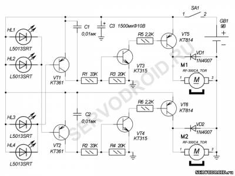
Рис.1. Принципиальная электрическая схема.
Светодиоды в парах включены параллельно для того чтобы расширить диаграмму направленности робота. Иначе говоря, чтобы робот реагировал на источник света не только при лобовом освещении, но и сбоку. Когда яркий луч от фонарика попадает на корпус допустим светодиода HL1 (или HL2), то на базовом выводе транзистора VT2 появляется отрицательный потенциал, который открывает транзистор. На коллекторном выводе этого транзистора отрицательный потенциал сменяется положительным.
Делитель на резисторах R2,R4 задаёт рабочую точку транзистора VT4. При появлении положительного потенциала на базовом выводе транзистора VT4 он открывается. Благодаря резистору R4 транзистор VT4 работает в ключевом режиме и управляет мощным транзистором VT6. Когда транзистор VT4 открыт, то подключает базовый вывод транзистора VT6 к минусу источника питания и открывает его. Резистор R6 ограничивает базовый ток. Транзистор VT6 к левому по схеме выводу мотора M2 через переход эмиттер-коллектор подключает положительный потенциал и мотор начинает работать. Диод VD2 гасит индукционную составляющую при работе мотора M2, предохраняя таким образом транзистор VT6 от импульса повышенного обратного напряжения.
Аналогично работает часть схемы управляемая светодиодами HL3,HL4. Только теперь включится мотор M1. Правая пара светодиодов управляет левым мотором, а левая пара светодиодов правым мотором. Таким образом, реализуется перекрёстный алгоритм управления, в результате которого схема отслеживает направление на источник света.
4.ДЕТАЛИ И МАТЕРИАЛЫ
Печатная плата изготовлена из односторонне фольгированного листа стеклотекстолита толщиной 1,5-2мм. Размеры печатной платы 70х60мм. Список радиокомпонентов приведён в таблице.1. Монтаж радиокомпонентов выполняется по приведённому чертежу на рис.2. В качестве фотоэлементов рекомендуются отечественные светодиоды АЛ307БМ или АЛ307КМ. Как ни странно они работают в качестве фотоэлемента гораздо лучше импортных и более чувствительны к освещению видимого диапазона.
Таблица.1.Список радиокомпонентов.
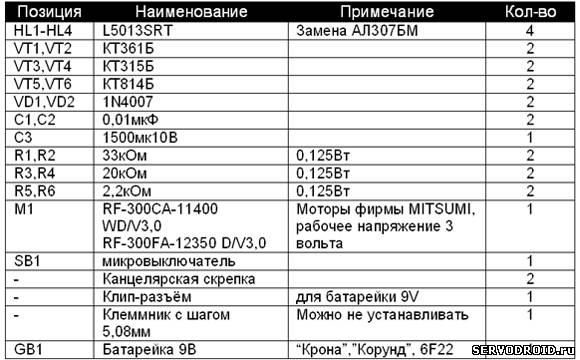
5.ПОШАГОВАЯ ИНСТРУКЦИЯ СБОРКИ РОБОТА
Для успешной сборки точно следуйте инструкциям. Сборка робота выполняется печатной плате выполненной из одностороннего стеклотекстолита толщиной 1-1,5мм. Помните, все чертежи архива приведены в точных размерах, подгонять или изменять размеры до печати категорически не рекомендуется! Все необходимые для сборки чертежи находятся в архиве в конце статьи.
Шаг.1.Монтаж радиокомпонентов
Монтаж радиокомпонентов проводят по чертежу монтажной платы на рис.2. Клеммник XT1 устанавливать не обязательно. Вы можете непосредственно подпаять провод питания с учётом полярности. Для подключения к батарее 9 вольт воспользуйтесь стандартным клип-разъёмом. У конденсатора на позиции C3 после монтажа следует загнуть выводы и расположить горизонтально. Светодиоды в передней части робота, как уже было сказано выше, монтируют так: HL1,HL4 вдоль, а HL2.HL3 под углом к печатной плате. Затем все четыре светодиода рекомендуется немного отогнуть вверх.
Разъёмы для подключения моторов рекомендуется установить, так как это даёт возможность оперативно установить направление вращения валов обоих моторов. В качестве разъёмов используется пара штырьков, которые запаяны на позиции для подключения моторов.
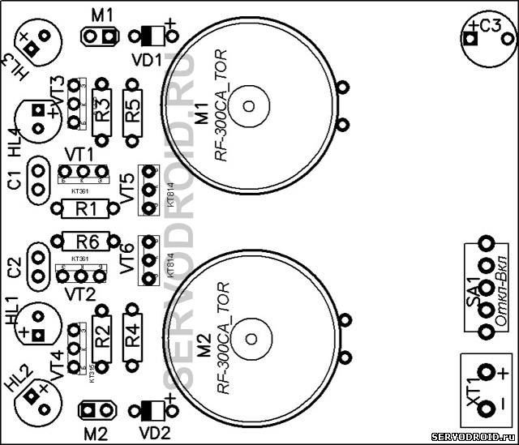
Рис.2. Чертёж монтажной платы.
Шаг.2.Монтаж силовой рамы
Силовая рама предназначена для установки двигателей. Она изготавливается из жести взятой от любой консервной банки. При работе с жестью будьте очень осторожны! На рис.3 показан чертёж силовой рамы. Все указанные числовые значения на чертеже даны в миллиметрах. Пунктирами обозначены места сгибов. Сгибы лучше выполнять с использованием монтажных плоскогубцев. Выгните жесть в форме горки. Когда силовая рама будет готова она должна выглядеть так же как на фото.3.
|
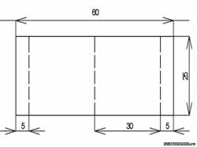 рис.3 |
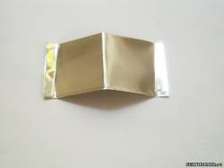 фото.3 |
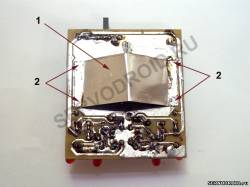 фото.4 |
Установите силовую раму на поверхность печатной платы со стороны токоведущих дорожек. Силовая рама должна находиться в пределах металлизированной поверхности (большая область покрытая фольгой). Будьте внимательны, силовая рама не должна замыкать соседние токоведущие дорожки друг с другом!
На фото.4 все токопроводящие поверхности залужены. Лужение поверхности - это покрытие тонким слоем припоя с использованием флюса. Лужение проводят для защиты токоведущих дорожек от коррозии и улучшения токопроводящих свойств. Рекомендуется проводить лужение жидким флюсом. Залудите также на силовой раме(1) те участки(2), которыми она будет припаяна к поверхности печатной платы. После правильного расположения силовой рамы(1) на поверхности печатной платы припаяйте её (фото.4).
Шаг.3.Крепёж и подключение моторов
Переходим к подключению моторов. Для крепежа моторов используйте термоплавкий клей. Через специальный пистолет нанесите его на одну наклонную поверхность силовой рамы(1) и также быстро нанесите на торцевую часть мотора. Затем прижмите мотор к боковой поверхности и удерживайте в таком положении около минуты. Тоже проделайте со вторым мотором. Устанавливая таким образом моторы ориентируйтесь по фото.5.
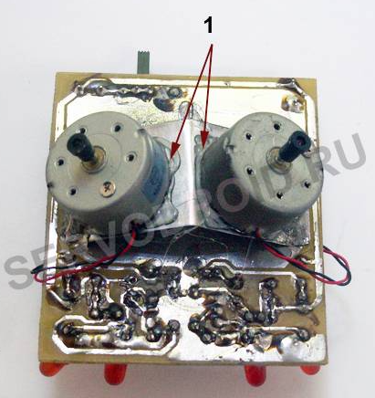
Фото.5
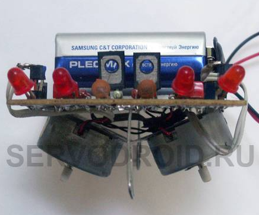
Фото 6
На фото.5 (вид спереди) показано итоговое расположение моторов на силовой раме. Для улучшения сцепления с поверхностью наденьте на валы обоих моторов трубочки. Установка роликов не рекомендуется, так как это приведёт к ещё более быстрой скорости передвижения.
Так как моторы расположены близко друг к другу реакция робота на источник света будет мгновенной, что не всегда удобно. Если вас это не устраивает, то воспользуйтесь приведёнными далее способами.
Во-первых можно изменить конфигурацию силовой рамы и расположить моторы значительно дальше друг от друга, тогда реакция на свет будет плавнее. Во-вторых увеличить сопротивление резисторов R5,R6 несколько раз (подбирать экспериментально). В-третьих использовать моторы с большим рабочим напряжением, например в диапазоне от 6 до 12 вольт.
Подключайте моторы через разъёмы следующим образом:
Возможно, длины провода для подключения моторов не хватит, тогда его придётся нарастить. Лишнюю длину провода после соединения можно убрать под силовую раму.
Шаг.4.Монтаж передней и задней опоры
Высокую устойчивость конструкции обеспечивают четыре точки опоры. Из которых, две точки опоры - это оси моторов, и ещё две - это скользящие опоры выполненные из металлических скрепок. Опоры из скрепок расположены в передней и задней части печатной платы. Изготовьте переднюю и заднюю опоры из металлических канцелярских скрепок выгибая их как на фото.7. Залудите указанный красной стрелкой на фото.7. участок. и припаивайте со стороны токоведущих дорожек к позициям показанным красными стрелками на фото.8. Во время пайки скрепки сильно нагреваются, поэтому удерживайте их с помощью монтажных плоскогубцев.
|
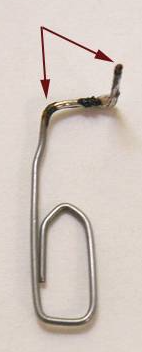 Фото.7 |
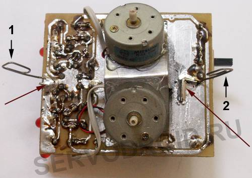 Фото.8 |
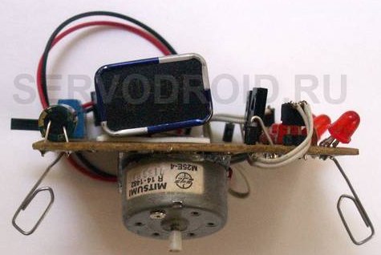
Фото 9
На фото.9 (вид сбоку) показано правильное расположение передней и задней опор. Подгибая опоры вперёд или назад можно регулировать угол наклона передней или задней частей робота.
Шаг.5.Настройка
Если после включения питания и освещения источником света ваш робот крутится на месте, поменяйте полярность подключения одного из моторов вал которого вращается в противоположном направлении и вызывает поворот назад. Если робот не реагирует на источник света возможно неправильно установлены транзисторы КТ315, КТ361 или КТ814, так же возможна ошибка в подключении светодиодов. Особое внимание рекомендуется обратить на возможные замыкания между токоведущими дорожками. Замыкания между токоведущими дорожками устраняют опуская жало паяльника в канифоль и проводя по местам замыканий.
При отсутствии серьёзных ошибок в монтаже робот будет двигаться за источником света, например от фонарика или реагировать на прямой солнечный свет. СБОРКА ОКОНЧЕНА!
Ниже приведен чертеж печатной платы (теромоклише). После скачивания распечатайте чертеж на лазерном принтере. Термоклише на глянцевой бумаге, а чертёж печатной платы на обычной формата А4. Используйте термоклише для перевода рисунка на стеклотекстолит по методу ЛУТ. Чертёж печатной платы необходим для контроля качества токоведущих дорожек после лут-перевода.
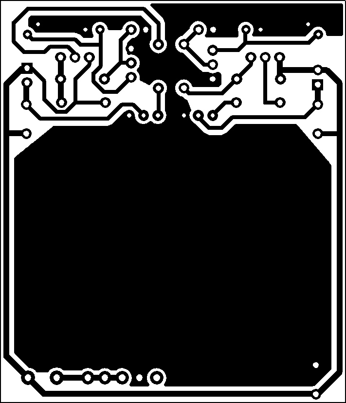
Источник:
http://www.servodroid.ru/load/0-0-0-21-20
пароль к архиву ledbot348
Авторство на статью принадлежит SERVODROI.RU